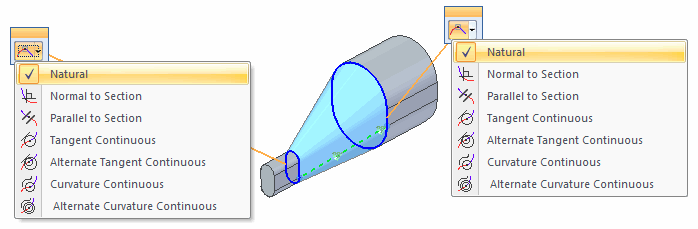
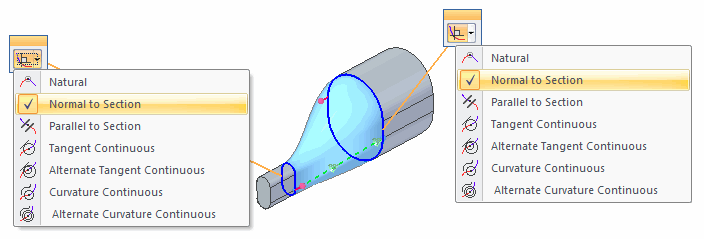
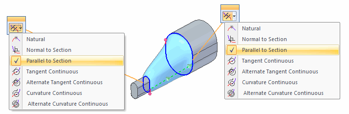
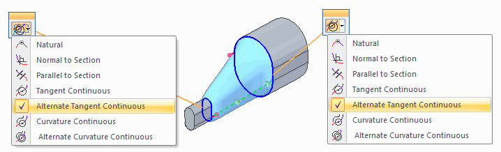
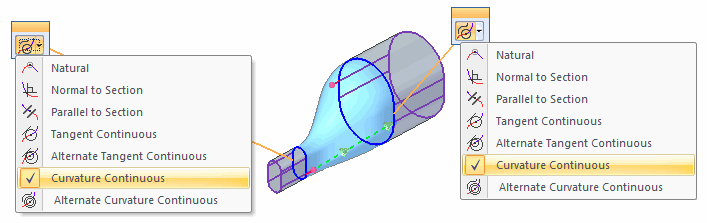
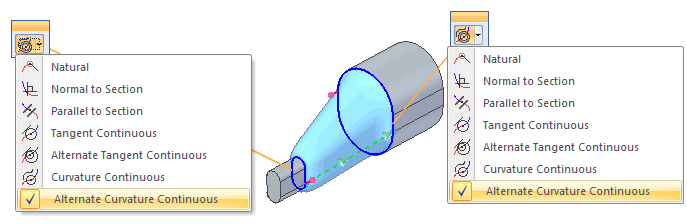
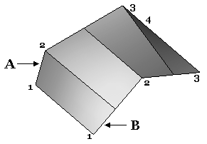
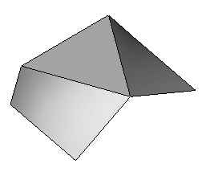

BlueSurf Options dialog box
- Standard Tab Options
- Tangency Control
-
Specifies the options you want for controlling the shape at the ends of the feature. For example, when you are creating a BlueSurf feature that must blend smoothly with adjacent surfaces, you can set the Normal to Section option to ensure a smooth blend between the existing surfaces.
The following options are available, depending on the geometry you select for the cross section or guide curve:
- Natural
-
There are no constraining condition enforced at the end sections. This is the default end condition and is valid for any cross section type.

- Normal to Section
-
End cross sections that are planar support a normal to section end condition. You can control the length of the vector using the variable table or by modifying the vector handle in the graphics window. In this example, the resultant surface illustrates the graphic handles (1) that you can use to modify the surface.

- Parallel to Section
-
End cross sections that are planar support a parallel to section end condition. You can control the length of the vector using the variable table or by modifying the vector handle in the graphics window. To see the effect of this setting, compare the following illustration of Parallel to Section with the Normal to Section example.

- Tangent Continuous
-
End cross sections defined using part edges and construction curves support a tangent condition. The tangent vector for the surface is determined by the adjacent surfaces. You can control the length of the vector using the variable table or by modifying the vector handle in the graphics window.

- Alternate Tangent Continuous
-
End cross sections defined using part edges and construction surfaces support a tangent interior condition. Tangent Interior forces the surface to be tangent to the inside faces. For example, the surface below has the Alternate Tangent Continuous option applied to both cross section. The resulting surface is constructed tangent to the planar face.

- Curvature Continuous
-
End cross sections defined using part edges and construction surfaces support a curvature continuous condition. The tangent vector for the surface is determined by the adjacent surfaces. You can control the length of the vector using the variable table or by modifying the vector handle in the graphics window.

- Alternate Curvature Continuous
-
End cross sections defined using part edges and construction surfaces support a alternate curvature continuous condition. The tangent vector for the surface is determined by the alternate face at that end. You can control the length of the vector using the variable table or by modifying the vector handle in the graphics window.

For more information and illustrations that show you how you can control the surface shape at the ends of BlueSurf and lofted features, see the End Conditions section in the Constructing Lofted Features (ordered) or Constructing Lofted Features (synchronous) Help topics.
- Start Section
-
Specifies the tangency control option you want for the first cross section.
- End Section
-
Specifies the tangency control option you want for the last cross section.
- Edge Guide 1
-
Specifies the tangency control option you want for the first guide curve. The options available for defining guide curve tangency conditions depend on the type of element you select for the guide curve. For example, if you want to be able to control the tangency of the BlueSurf feature with respect to an adjacent surface, use an edge on the surface as the guide curve rather than, for example, the sketch that was used to construct the adjacent surface.
- Edge Guide 2
-
Specifies the tangency control option you want for the last guide curve. The options available for defining guide curve tangency conditions depend on the type of element you select for the guide curve. For example, if you want to be able to control the tangency of the BlueSurf feature with respect to an adjacent surface, use an edge on the surface as the guide curve rather than, for example, the sketch that was used to construct the adjacent surface.
- End Capping
-
Specifies the end capping options you want. This option is available only when the cross section profiles are closed.
- Open Ends
-
Specifies that no planar end caps are added to the feature.
- Close Ends
-
Specifies that planar end caps are added to the feature to create an enclosed volume.
- Extent type
-
Controls whether or not the feature closes on itself.
- Open
-
Specifies that the feature begins with the first cross section and ends with the last cross section. The feature does not close on itself.
- Closed
-
Specifies that the surface will close on itself. When you set this option, the first cross section is also used for the last cross section.
- Curve Connectivity
-
Specifies how a cross section and a guide curve are connected. These options only apply to new sketches you add using the Insert sketch button on the command bar.
- Use Pierce Points
-
Specifies that a connect relationship is used to connect the cross section and guide curve where they intersect. The position of the connect relationship is calculated using the Pierce Point option on the IntelliSketch dialog box. The Use Pierce Points option is typically used when constructing engineered surfaces, such as the surfaces for a fan or turbine blade, where engineering data or dimension-driven criteria must be maintained.
- Use BlueDots
-
Specifies that a BlueDot is used to connect the cross section and guide curve where they intersect. When you connect a cross section and a guide curve with a BlueDot, you can use the BlueDot as a handle to dynamically modify the shape of the cross section and guide curve. The Use BlueDots option is typically used when constructing esthetic surfaces, such as the surfaces for consumer electronics product, where a more free-form approach to surface design is desired.
Note:The Use BlueDots option is available only in the ordered modeling environment. The BlueDots functionality is not available in the synchronous environment.
- Inserted-Sketch
-
Allows you to define a tolerance value for sketches you insert. The tolerance value you specify is used to control the complexity of the curve that is created.
- Tolerance
-
Specifies the tolerance value you want to use.
- Advanced Tab Options
- Vertex Mapping
-
Vertex mapping is a technique to help create flow between section vertices; you can map a vertex or point on one cross section to a vertex or point on another cross section. Vertex mapping is useful for controlling or eliminating twists and discontinuities in a surface. If there is a vertex count mismatch between sections, equally spaced vertices are used on each section.
You can add vertex maps while creating a BlueSurf or by editing an existing BlueSurf.
Notice in the first image below that section (A) has four vertices and section (B) has three vertices. The BlueSurf command automatically inserts vertices equally spaced on each section. Notice the surface flow is not smooth.

The result of vertex mapping.

- Map Sets
-
Lists the sets of mapped vertices you have defined. You can add vertex map sets to create a smooth surface flow; to add a new set of mapped vertices, click the Add button, then click a point on each cross section curve.
- Add
-
Allows you to add a new mapped vertex set.
- Delete
-
Allows you to delete an existing mapped vertex set.
- Reorder
-
Allows you to reorder cross sections that were defined out-of-sequence. This option is useful when you modify an existing feature by adding a new cross section. You cannot use the reordering capability to create a feature that intersects itself.
To reorder a cross section, select the cross section in the list, then click the Up or Down buttons to move the cross section entry in the list.
How do I
Insert sketches into a BlueSurfAdding cross sections into a BlueSurf (ordered modeling)
Construct a BlueSurf feature
Connect sketch elements with a BlueDot
Learn more
BlueSurf overviewEnd Conditions
Cross sections
Look up more details
BlueSurf commandBlueSurf command bar
BlueDot command (ordered modeling)
BlueDot Edit command bar (ordered modeling)
Hide All BlueDots command (ordered modeling environment)